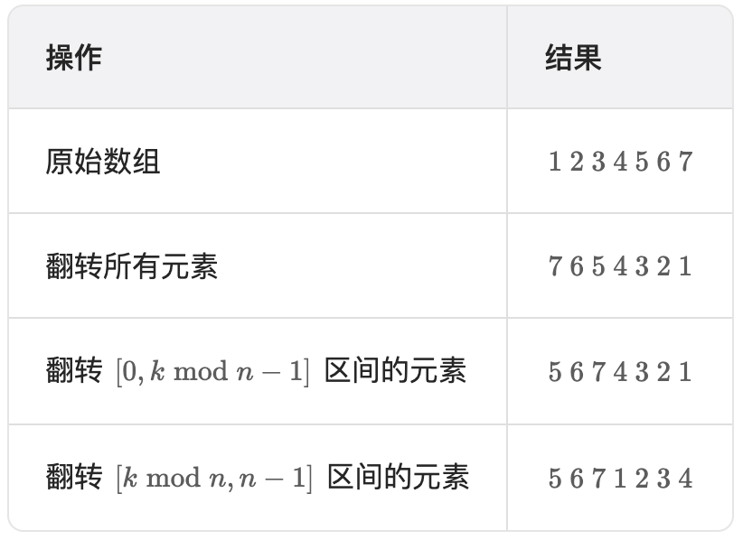
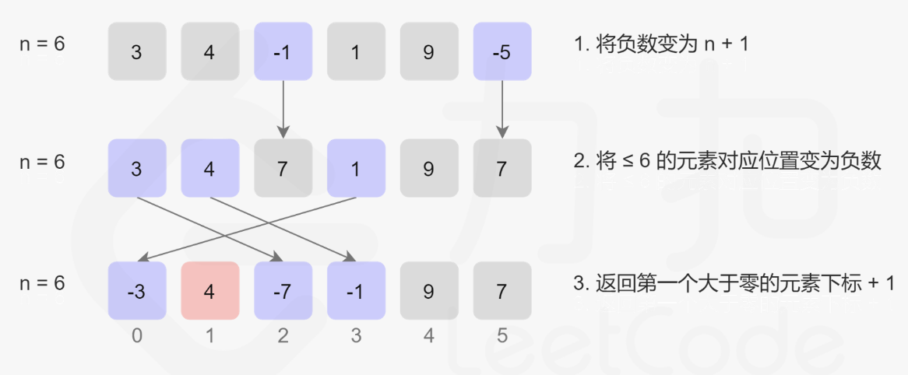

持续更新。。。
9,16,18,28,
31,33,43,45,47,
53,55,58,61,
62,63,64,68,74,
76,80,82,83,84,
88,89,96,98,100
哈希
1. 两数之和（简单）
-
哈希
def twoSum(self, nums: List[int], target: int) -> List[int]: tab = {} for i in range(len(nums)): if target-nums[i] in tab: return [i,tab[target-nums[i]]] tab[nums[i]]=i
2. 字母异位词分组（中等）
-
排序+哈希
def groupAnagrams(self, strs: List[str]) -> List[List[str]]: tab = defaultdict(list) for s in strs: key = ''.join(sorted(s)) # list需要转换为字符串才能进行哈希 tab[key].append(s) return list(tab.values()) -
计数+哈希
def groupAnagrams(self, strs: List[str]) -> List[List[str]]: mp = defaultdict(list) for st in strs: counts = [0] * 26 for ch in st: counts[ord(ch) - ord("a")] += 1 # 需要将 list 转换成 tuple 才能进行哈希 mp[tuple(counts)].append(st) return list(mp.values())
3. 最长连续序列（中等）
-
哈希
当 num-1 在集合中时，跳过。
当 num-1 不在集合中，说明 num 为一个序列的起点，依次判断 cur+1 是否在集合中。
def longestConsecutive(self, nums: List[int]) -> int: ans=0 nums_set = set(nums) for num in nums: if num-1 not in nums_set: cur,long = num,1 while cur+1 in nums_set: cur = cur+1 long += 1 ans = max(ans,long) return ans -
哈希+动规
记录序列端点的最大长度，每次遍历到 num，得到 num-1 和 num+1 序列的长度 l 和 r，则连续长度为 l+r+1，更新哈希表。
def longestConsecutive(self, nums: List[int]) -> int: tab = dict() ans = 0 for num in nums: if num not in tab: l = tab.get(num-1,0) r = tab.get(num+1,0) cur = l+r+1 ans = max(ans,cur) tab[num]=cur tab[num-l]=cur tab[num+r]=cur return ans
双指针
4. 移动零（简单）
-
双指针
将把 0 移动到末尾转换为把非零数字移动到数组开头，这样可以保证非零数字的相对顺序。
设置左右指针 l 和 r，l 指向非零数字需要放置的地方，遍历 r，每当遇到 0 就和 l 处交换。
def moveZeroes(self, nums: List[int]) -> None: """ Do not return anything, modify nums in-place instead. """ l,r,n=0,0,len(nums) while r<n: if nums[r]!=0: nums[l],nums[r]=nums[r],nums[l] l+=1 r+=1
5. 盛最多水的容器（中等）
-
双指针
每次移动较小的指针，才有可能使存储的水量变多。
def maxArea(self, height: List[int]) -> int: n=len(height) ans,i,j=0,0,n-1 while i<j: water = min(height[i],height[j])*(j-i) ans = max(water,ans) if height[i]<=height[j]: i+=1 else: j-=1 return ans
6. 三数之和（中等）
-
双指针+排序
排序，遍历到相同的数时跳过以达到去重的目的。
def threeSum(self, nums: List[int]) -> List[List[int]]: n=len(nums) ans=[] nums.sort() for i in range(n-2): if i!=0 and nums[i]==nums[i-1]: continue if nums[i]>0: break l,r=i+1,n-1 while l<r: if nums[l]+nums[r]==-nums[i]: ans.append([nums[i],nums[l],nums[r]]) while l<r and nums[l+1]==nums[l]: l+=1 while l<r and nums[r-1]==nums[r]: r-=1 l+=1 r-=1 elif nums[l]+nums[r]>-nums[i]: r-=1 else: l+=1 return ans
extra. 合并两个有序数组（简单）
-
逆向双指针
def merge(self, nums1: List[int], m: int, nums2: List[int], n: int) -> None: p1,p2=m-1,n-1 idx = m+n-1 while p2>=0: if p1<0 or nums1[p1]<nums2[p2]: nums1[idx]=nums2[p2] p2-=1 else: nums1[idx]=nums1[p1] p1-=1 idx-=1
7. ⭐️ 接雨水（困难）
-
动态规划
维护两个数组 left 和 right，分别表示 i 处左右最高柱子的高度。i 处接的雨水为 min(left[i],right[i])-height[i]。
def trap(self, height: List[int]) -> int: n=len(height) left,right=[height[0]]+[0]*(n-1),[0]*(n-1)+[height[-1]] for i in range(1,n): left[i]=max(left[i-1],height[i]) right[n-i-1]=max(right[n-i],height[n-i-1]) return sum(min(left[i],right[i])-height[i] for i in range(n)) -
双指针
使用双指针优化动态规划方法的空间复杂度。维护双指针 left 和 right 以及 两个变量 leftmax 和 rightmax 标志左右两侧柱子最高的高度。
def trap(self, height: List[int]) -> int: n,ans=len(height),0 left,right=0,n-1 leftmax,rightmax=0,0 while left<right: leftmax=max(leftmax,height[left]) rightmax=max(rightmax,height[right]) if height[left]<height[right]: ans+=leftmax-height[left] left+=1 else: ans+=rightmax-height[right] right-=1 return ans -
单调栈
维护一个单调栈，存储下标，保证下标对应的柱子高度递减。
当遍历到下标 i 时，若下标 i 的柱子的高度大于栈顶元素 top 的高度，由于 height[top-1]>height[top]，此时得到一个可以接雨水的区域。重复这个操作直至栈空或 height[top]>=height[i]。将 i 入栈。
def trap(self, height: List[int]) -> int: n,ans,stack=len(height),0,[] for i, hi in enumerate(height): while stack and hi>height[stack[-1]]: top = stack.pop() if not stack: break w = i-stack[-1]-1 h = min(hi,height[stack[-1]])-height[top] ans += w*h stack.append(i) return ans
滑动窗口
8. 无重复字符的最长子串（中等）
-
滑动窗口+哈希
哈希表存储窗口内的子串，遇到重复则更新左指针。
def lengthOfLongestSubstring(self, s: str) -> int: seen=set() n=len(s) rp,ans=-1,0 for i in range(n): if i!=0: seen.remove(s[i-1]) while rp+1<n and s[rp+1] not in seen: seen.add(s[rp+1]) rp+=1 ans = max(ans,rp-i+1) return ans #################################################### def lengthOfLongestSubstring(self, s: str) -> int: n,ans=len(s),0 i,j=0,0 tab = dict() while j<n: if s[j] in tab: i = max(i,tab[s[j]]+1) # 更新左指针 ans = max(j-i+1,ans) tab[s[j]]=j j+=1 return ans
子串
10. ⭐️ 和为 K 的子数组（中等）
-
⭐️ 哈希表+前缀和
用哈希表记录前缀和出现的次数，若当前 s-k 在哈表中出现过，则说明可以构成 dict[s-k] 个和为 k 的子数组。
def subarraySum(self, nums: List[int], k: int) -> int: s=ans=0 my_dict = defaultdict(int) my_dict[0]=1 for num in nums: s += num ans += my_dict[s-k] my_dict[s]+=1 return ans
11. ⭐️ 滑动窗口最大值（困难）
-
⭐️ 堆
维护一个大根堆，存储元素为 (-nums[i], i)。当窗口右端点遍历到 j 处时，将窗口右边的数加入到堆中，若堆顶元素 i<j-k+1，说明堆顶元素已不在窗口内，将其从堆中删除。
存储下标很重要，用于判断堆顶元素是否在窗口内。
import heapq class Solution: def maxSlidingWindow(self, nums: List[int], k: int) -> List[int]: heap,j=[],0 ans,n=[],len(nums) for i in range(k): heapq.heappush(heap,(-nums[i],i)) ans.append(-heap[0][0]) for j in range(k,n): heapq.heappush(heap,(-nums[j],j)) while heap[0][1]<=j-k: heapq.heappop(heap) ans.append(-heap[0][0]) return ans -
单调双端队列
维护一个单调双端队列，队列里的元素单调递减。队列里存储下标，每次移动窗口时，先判断队尾元素与新元素的大小关系，保持队列单调递减，将新元素下标加入到队列；判断队首元素下标是否在窗口外，如果在则出队。
存储下标很重要，用于判断队首元素是否在窗口内。
用 list 模拟双端队列效率较低，尽量用 collections.deque
class Solution: def maxSlidingWindow(self, nums: List[int], k: int) -> List[int]: n = len(nums) q = collections.deque() for i in range(k): while q and nums[i] >= nums[q[-1]]: q.pop() q.append(i) ans = [nums[q[0]]] for i in range(k, n): while q and nums[i] >= nums[q[-1]]: q.pop() q.append(i) while q[0] <= i - k: q.popleft() ans.append(nums[q[0]]) return ans
12. 最小覆盖子串（困难）
-
滑动窗口+哈希表
维护一个哈希表，存储所需字符的数量。
不断右移窗口右端点，直至窗口内包含了 t 的所有元素；不断右移窗口左端点，将不必要的元素排除，记录最佳答案；不断重复，直至右端点超出了 s 的范围。
额外使用一个 cnt 变量来记录所需元素的总数量，当 cnt=0 时即可开始收缩窗口。
def minWindow(self, s: str, t: str) -> str: m,n=len(s),len(t) if n>m: return "" tab = Counter(t) cnt,i = n,0 ans,start=float('inf'),-1 for j,c in enumerate(s): if tab[c]>0: cnt-=1 tab[c]-=1 if cnt==0: # 满足所需字符 while s[i] not in tab or tab[s[i]]<0: # 排除不必要元素 if tab[s[i]]<0: tab[s[i]]+=1 i+=1 if j-i+1<ans: ans,start=j-i+1,start # 最佳答案 tab[s[i]]+=1 cnt+=1 i+=1 return s[start:start+ans] if start!=-1 else ""
普通数组
13. 最大子数组和（中等）
-
动态规划
定义 dp[i] 表示取 nums[i] 时的最大子数组和，则当 dp[i-1] 大于零时，加上 nums[i]；否则，取 nums[i]。
注意初始值不能为零，考虑负值。
def maxSubArray(self, nums: List[int]) -> int: n=len(nums) s,ans=-inf,-inf for i in range(n): if s>=0: s+=nums[i] else: s=nums[i] ans=max(ans,s) return ans
14. 合并区间（中等）
-
排序
def merge(self, intervals: List[List[int]]) -> List[List[int]]: intervals.sort() ans=[] for interval in intervals: if not ans or interval[0]>ans[-1][1]: # 不重叠区间 ans.append(interval) else: # 重叠区间，更新右端点 ans[-1][1]=max(ans[-1][1],interval[1]) return ans
15. ⭐️ 轮转数组（中等）
-
使用额外数组
def rotate(self, nums: List[int], k: int) -> None: """ Do not return anything, modify nums in-place instead. """ n,k=len(nums),k%n if k==0: return nums[:]=nums[n-k:]+nums[:n-k] -
⭐️ 数组翻转
当我们将数组的元素向右移动 $k$ 次后，尾部 $k\bmod n$ 个元素会移动至数组头部，其余元素向后移动 $k\bmod n$ 个位置。因此可依次翻转全部数组、翻转 $[0,k\bmod n-1]$ 区间，翻转 $[k\bmod n,n-1]$ 区间。
def rotate(self, nums: List[int], k: int) -> None: """ Do not return anything, modify nums in-place instead. """ def reverse(i,j): while i<j: nums[i],nums[j]=nums[j],nums[i] i,j=i+1,j-1 n=len(nums) reverse(0,n-1) reverse(0,k%n-1) reverse(k%n,n-1) -
⭐️ 循环交换
位置为 i 的元素将会出现在位置 (i+k)%n，每次处理时保存新位置的元素并将其交换至下一个位置，直到遍历完全部元素，遍历循环次数为 gcd(n,k)。
def rotate(self, nums: List[int], k: int) -> None: """ Do not return anything, modify nums in-place instead. """ def gcd(a,b): return gcd(b%a,a) if a else b n=len(nums) k=k%n cnt = gcd(k,n) for start in range(cnt): cur = (start + k) % n prev = nums[start] while start!=cur: nums[cur],prev=prev,nums[cur] cur = (cur + k)%n nums[cur],prev=prev,nums[cur]
17. ⭐️ 缺失的第一个正数（困难）
-
标记数组
首先将所有负数转换为 n+1；遍历数组，将属于 $[1,N]$ 的元素对应位置标记为负数；寻找第一个不为负数的位置，即为缺失的第一个正数。
def firstMissingPositive(self, nums: List[int]) -> int: n = len(nums) for i in range(n): if nums[i]<=0: nums[i]=n+1 for i in range(n): num=abs(nums[i]) # 若已被标记为负数，取其绝对值进行判断 if num<n+1: nums[num-1]=-abs(nums[num-1]) for i in range(n): if nums[i]>0: return i+1 return n+1 -
置换
通过置换使 $nums[i]=i+1$。当 $1\leq nums[i]\leq n\ 且\ nums[i]-1\neq i$ 时，进行交换。为防止死循环，还需要保证进行置换的两个值不相等，即 $nums[i]\neq nums[nums[i]-1]$。
def firstMissingPositive(self, nums: List[int]) -> int: n = len(nums) for i in range(n): while 1<=nums[i]<=n and nums[i]!=nums[nums[i]-1]: # 为防止死循环，判断条件不能为 i!=nums[i]-1 nums[nums[i]-1],nums[i]=nums[i],nums[nums[i]-1] for i in range(n): if nums[i]-1!=i: return i+1 return n+1
矩阵
19. 螺旋矩阵（中等）
-
模拟
设置上下左右四个边界，模拟螺旋过程依次输出，遇到越界则停止。
def spiralOrder(self, matrix: List[List[int]]) -> List[int]: m,n=len(matrix),len(matrix[0]) top,bottom,left,right=0,m-1,0,n-1 ans=[] while True: for j in range(left,right+1): ans.append(matrix[top][j]) # 从左到右 top+=1 if top>bottom: break for i in range(top,bottom+1): ans.append(matrix[i][right]) # 从上到下 right-=1 if left>right: break for j in range(right,left-1,-1): ans.append(matrix[bottom][j]) # 从右到左 bottom-=1 if top>bottom: break for i in range(bottom, top-1,-1): ans.append(matrix[i][left]) # 从下到上 left+=1 if left>right: break return ans
20. 旋转图像（中等）
-
原地交换
找到对应四个点的坐标：$(i,j)\rightarrow(j,n-1-i)\rightarrow(n-1-i,n-1-j)\rightarrow(n-1-j,i)\rightarrow(i,j)$
def rotate(self, matrix: List[List[int]]) -> None: """ Do not return anything, modify matrix in-place instead. """ n=len(matrix) cnt = (n+1)//2 for i in range(cnt): for j in range(i,n-1-i): matrix[i][j],matrix[j][n-1-i],matrix[n-1-i][n-1-j],matrix[n-1-j][i]=matrix[n-1-j][i],matrix[i][j],matrix[j][n-1-i],matrix[n-1-i][n-1-j]
21. 搜索二维矩阵 II（中等）
-
二分查找
def searchMatrix(self, matrix: List[List[int]], target: int) -> bool: m,n=len(matrix),len(matrix[0]) i,j=0,n-1 while i<m and j>=0: if target==matrix[i][j]: return True elif target>matrix[i][j]: i+=1 else: j-=1 return False
链表
22. 相交链表（简单）
-
双指针
双指针遍历，当遇到表尾时，跳转至另一表头，直至双指针相遇。
def getIntersectionNode(self, headA: ListNode, headB: ListNode) -> Optional[ListNode]: pa,pb=headA,headB while pa!=pb: pa = pa.next if pa else headB pb = pb.next if pb else headA return pa -
哈希表
先遍历 headA，将每一个节点加入到哈希表中；遍历 headB，判断节点是否在哈希表中。
23. 反转链表（简单）
-
指针
一行赋值时注意先更新 p.next，若先更新 p，则 p.next 会改变。
def reverseList(self, head: Optional[ListNode]) -> Optional[ListNode]: if not head or not head.next: return head pre,p = None,head while p: pre,p.next,p = p,pre,p.next # 注意先更新 p.next return pre
extra. ⭐️ 反转链表 II（中等）
-
穿针引线
先定位 left 和 right，然后设置前驱和后继指针 pre 和 tail，对 left 和 right 区间反转链表。这个方法的弊端是当 left 和 right 的跨度特别大时，需要遍历链表两次。
def reverseBetween(self, head: Optional[ListNode], left: int, right: int) -> Optional[ListNode]: def reverse(head,tail): pre,p=None,head while pre!=tail: pre,p.next,p=p,pre,p.next return tail,head pre=dummy=ListNode(next=head) tail=head for i in range(left-1): head=head.next pre=pre.next for j in range(right-1): tail=tail.next nxt=tail.next head,tail=reverse(head,tail) pre.next,tail.next=head,nxt return dummy.next -
⭐️ 头插法（一次穿针引线）

在需要反转的区间里，每遍历到一个节点，让这个新节点来到反转部分的起始位置。下面的图展示了整个流程。具体来说，需要三个指针：
pre，curr和next。- pre：指向 left 的前一个节点
- curr：指向反转区域的第一个节点 left
- next：指向curr的下一个节点
具体步骤如下：
- 设置 curr 的下一个节点为 next
- curr.next 指向 next.next
- next.next 指向 pre.next
- pre.next 指向 next

def reverseBetween(self, head: Optional[ListNode], left: int, right: int) -> Optional[ListNode]: pre=dummy=ListNode(next=head) for _ in range(left-1): pre=pre.next curr = pre.next for _ in range(right-left): nxt = curr.next curr.next = nxt.next nxt.next = pre.next pre.next = nxt return dummy.next
24. 回文链表（简单）
-
反转链表
找中点+反转链表+遍历比较
def isPalindrome(self, head: Optional[ListNode]) -> bool: slow = fast = head while fast and fast.next: slow = slow.next fast = fast.next.next pre,p = None,slow while p: pre,p.next,p = p,pre,p.next p = head while p and pre: if p.val != pre.val: return False p,pre=p.next,pre.next return True
25. 环形链表（简单）
-
快慢指针
def hasCycle(self, head: Optional[ListNode]) -> bool: if not head or not head.next: return False dummy = ListNode() dummy.next=head slow=fast=dummy while fast and fast.next: fast=fast.next.next slow=slow.next if slow==fast: return True return False
26. 环形链表 II（中等）
-
快慢指针
设置快慢指针，假设链表存在环，则快慢指针会在环内相遇，如下图：

此时有 $2(a+b)=a+(n+1)(b+c)+b\Rightarrow a=n(b+c)+c$，即头结点到入环点的距离为相遇点到入环点的距离加上 n 圈的环长。因此，再设置一个指针从头结点出发，则一定能和慢指针在入环点相遇。
def detectCycle(self, head: ListNode) -> ListNode: slow,fast=head,head while fast and fast.next: slow,fast=slow.next,fast.next.next if slow==fast: break # 这个判断条件不能为 if slow!=fast，需考虑只有一个节点且没有环的情况 if not fast or not fast.next: return None p=head while p!=slow: p,slow=p.next,slow.next return slow
27. 合并两个有序链表（简单）
-
递归
def mergeTwoLists(self, list1: Optional[ListNode], list2: Optional[ListNode]) -> Optional[ListNode]: if not list1: return list2 if not list2: return list1 if list1.val < list2.val: list1.next = self.mergeTwoLists(list1.next,list2) return list1 else: list2.next = self.mergeTwoLists(list1,list2.next) return list2
29. 删除链表的倒数第 N 个结点（中等）
-
快慢指针
设置快指针先遍历 n 次，然后用慢指针定位待删除节点的前节点。
def removeNthFromEnd(self, head: Optional[ListNode], n: int) -> Optional[ListNode]: slow = dummy = ListNode(next=head) # 使用 dummy 定位待删除节点的前节点 fast=head for _ in range(n): fast=fast.next while fast: slow,fast=slow.next,fast.next slow.next=slow.next.next return dummy.next
30. 两两交换链表中的节点（中等）
-
迭代
def swapPairs(self, head: Optional[ListNode]) -> Optional[ListNode]: pre = dummy = ListNode(next=head) while pre.next and pre.next.next: s,f = pre.next,pre.next.next pre.next,s.next,f.next=f,f.next,s pre = s return dummy.next -
递归
def swapPairs(self, head: Optional[ListNode]) -> Optional[ListNode]: if not head or not head.next: return head pre,cur = head,head.next pre.next = self.swapPairs(cur.next) cur.next = pre return cur
32. K 个一组翻转链表（困难）
-
模拟
循环，每次设置四个指针
pre, head, tail, nxt，分别指向待翻转区间前的节点，待翻转区间头结点，待翻转区间尾节点，带翻转区间后的节点。翻转待翻转区间，设置
pre.next=head,tail.next=nxt。def reverseKGroup(self, head: Optional[ListNode], k: int) -> Optional[ListNode]: def reverse(head,tail): pre, p, tmp = None, head, head while pre != tail: pre,p.next,p = p,pre,p.next return pre,tmp pre = tail = dummy = ListNode(next=head) while True: for i in range(k): if not tail.next: return dummy.next tail = tail.next nxt = tail.next head,tail = reverse(head,tail) pre.next = head tail.next = nxt pre,head = tail,tmp
34. ⭐️ 排序链表（中等）
-
归并排序（递归）
通过快慢指针将链表一分为二，进行归并排序
class Solution: def merge(self,list1,list2): if not list1 or not list2: return list1 or list2 if list1.val<=list2.val: list1.next = self.merge(list1.next,list2) return list1 else: list2.next = self.merge(list1,list2.next) return list2 def sortList(self, head: Optional[ListNode]) -> Optional[ListNode]: if not head or not head.next: return head slow=fast=head while fast.next and fast.next.next: fast=fast.next.next slow=slow.next mid,slow.next = slow.next,None # 划分链表 return self.merge(self.sortList(head),self.sortList(p)) -
⭐️ 迭代
若面试中要求常数级空间复杂度，需要迭代。
令子链表长度依次为 1, 2, 4, … ，循环归并。

class Solution: def merge(self,list1,list2): p = dummy = ListNode(0) while list1 and list2: if list1.val<=list2.val: p.next = list1 list1=list1.next else: p.next = list2 list2=list2.next p=p.next if not list1: p.next = list2 if not list2: p.next = list1 return dummy.next def sortList(self, head: Optional[ListNode]) -> Optional[ListNode]: if not head or not head.next: return head n,tmp=0,head while tmp: tmp=tmp.next n+=1 dummy = ListNode(next=head) k = 1 # 当前合并子链表长度 while k<=n: pre,cur = dummy,dummy.next while cur: left = cur # 左子链表头 for i in range(1,k): if cur.next: cur = cur.next else: break if not cur.next: # 左子链表长度不足 k，不用再归并 pre.next = left break right = cur.next # 右子链表头 cur.next = None # 断开左子链表 cur = right for i in range(1,k): if cur.next: cur = cur.next else: break nxt = None if cur.next: nxt = cur.next # 记录后续待合并链表表头 cur.next = None # 断开右子链表 cur = nxt pre.next = self.merge(left,right) # 将合并好的链表接在已合并好链表的表尾 while pre.next: pre = pre.next k*=2 return dummy.next
35. ⭐️ 合并 K 个升序链表（困难）
-
分治合并
两两合并链表。
def merge(self, list1, list2): # 迭代合并 p1,p2=list1,list2 tmp=dummy=ListNode() while p1 and p2: if p1.val<p2.val: tmp.next=p1 p1=p1.next else: tmp.next=p2 p2=p2.next tmp=tmp.next if not p1: tmp.next=p2 if not p2: tmp.next=p1 return dummy.next def merge_(self, list1, list2): # 递归合并 if not list1 or not list2: return list1 or list2 if list1.val<list2.val: list1.next = self.merge_(list1.next,list2) return list1 else: list2.next = self.merge_(list1,list2.next) return list2 def mergeKLists(self, lists: List[Optional[ListNode]]) -> Optional[ListNode]: if not lists: return None n=len(lists) if n==1: return lists[0] mid = n//2 return self.merge(self.mergeKLists(lists[:mid]),self.mergeKLists(lists[mid:])) -
⭐️ 堆合并（K个指针）
维护当前每个链表没有被合并的元素的最前面一个，每次在这些元素里面选取值最小的元素合并到答案中。使用小顶堆来维护这些元素。
def mergeKLists(self, lists: List[Optional[ListNode]]) -> Optional[ListNode]: if not lists: return None p=dummy=ListNode() heap=[] for i in range(len(lists)): if lists[i]: heapq.heappush(heap,(lists[i].val,i)) lists[i]=lists[i].next while heap: val,idx = heapq.heappop(heap) p.next = ListNode(val) if lists[idx]: heapq.heappush(heap,(lists[idx].val,idx)) lists[idx]=lists[idx].next p=p.next return dummy.next
36. ⭐️ LRU 缓存（中等）
-
双向链表+哈希
双向链表，表头为最久未使用节点，表尾为最新节点。
每次
get，将访问节点移至表尾；每次put，若 key 存在，则取出对应值并将该节点移至表尾，否则，则新建一个节点添加至表尾，此时若链表长度超过容量，则删除表头节点，并在哈希表中删除对应元素。在表头表尾各用一个空节点表示 head，tail。
class ListNode: def __init__(self,key=0,val=0,pre=None,net=None): self.key=key self.val=val self.pre=pre self.next=net class LRUCache: def __init__(self, capacity: int): self.capacity = capacity self.num = 0 self.head = ListNode() self.tail = ListNode() self.head.next = self.tail self.tail.pre = self.head self.tab = dict() def delnode(self,node): node.pre.next = node.next node.next.pre = node.pre def delhead(self): node = self.head.next self.delnode(node) return node def addtotail(self,node): self.tail.pre.next = node node.pre = self.tail.pre node.next = self.tail self.tail.pre = node def movetotail(self,node): self.delnode(node) self.addtotail(node) def get(self, key: int) -> int: if key not in self.tab: return -1 node = self.tab[key] self.movetotail(node) return node.val def put(self, key: int, value: int) -> None: if key in self.tab: node = self.tab[key] node.val = value self.movetotail(node) else: node = ListNode(key,value) self.addtotail(node) self.tab[key]=node self.num+=1 if self.num>self.capacity: node = self.delhead() self.tab.pop(node.key) self.num-=1 -
OrderedDict
直接使用封装好的 OrderedDict 定义 LRU。
class LRUCache(collections.OrderedDict): #继承 OrderedDict def __init__(self, capacity: int): super().__init__() self.capacity = capacity def get(self, key: int) -> int: if key not in self: return -1 self.move_to_end(key) return self[key] def put(self, key: int, value: int) -> None: if key in self: self.move_to_end(key) self[key] = value if len(self) > self.capacity: self.popitem(last=False) # last=False 删除第一个(最早添加)节点
二叉树
37. ⭐️ 二叉树的中序遍历（简单）
-
递归
def inorderTraversal(self, root: Optional[TreeNode]) -> List[int]: def dfs(node,ans): if not node: return dfs(node.left,ans) ans.append(node.val) dfs(node.right,ans) ans=[] dfs(root,ans) return ans -
⭐️ 迭代
结合指针和栈，每当节点不为空时，则将节点入栈，遍历左子树；当节点为空时，则说明左子树遍历完毕，此时栈顶为当前左子树的根节点，将根节点值加入到 ans 中，遍历右子树。
def inorderTraversal(self, root: Optional[TreeNode]) -> List[int]: if not root: return [] ans,stack=[],[] cur=root while cur or stack: if cur: stack.append(cur) cur=cur.left else: cur=stack.pop() ans.append(cur.val) cur=cur.right return ans -
⭐️ 前序遍历和后序遍历的迭代解法
# 前序遍历 def preorderTraversal(self, root: Optional[TreeNode]) -> List[int]: if not root: return [] stack,ans=[],[] cur=root while cur or stack: if cur: ans.append(cur.val) # 先处理根节点 stack.append(cur) cur = cur.left else: cur = stack.pop() cur = cur.right return ans后序遍历有两种方法，一种是按照后序遍历的顺序访问节点，一种是将 左-右-中 的后序遍历转换为 中-右-左 的前序遍历，在输出时将答案翻转。
# 后序遍历顺序访问节点 def postorderTraversal(self, root: Optional[TreeNode]) -> List[int]: if not root: return [] stack, ans =[], [] cur,pre = root,None # 设置一个 pre 指针，指向上一个加入 ans 数组的节点 while cur or stack: while cur: stack.append(cur) cur = cur.left cur = stack.pop() if not cur.right or cur.right==pre: # 若右节点为 pre，说明右子树已经遍历完毕 ans.append(cur.val) pre = cur cur = None else: stack.append(cur) cur = cur.right return ans# 转换为 中-右-左 的前序遍历 def postorderTraversal(self, root: Optional[TreeNode]) -> List[int]: if not root: return [] stack, ans =[], [] cur = root while cur or stack: if cur: ans.append(cur.val) stack.append(cur) cur = cur.right else: cur = stack.pop() cur = cur.left return ans[::-1]
38. 二叉树的最大深度（简单）
-
递归
def maxDepth(self, root: Optional[TreeNode]) -> int: if not root: return 0 l=self.maxDepth(root.left) r=self.maxDepth(root.right) return max(l,r)+1
39. 翻转二叉树（简单）
-
递归
def invertTree(self, root: Optional[TreeNode]) -> Optional[TreeNode]: if not root: return root root.left,root.right = self.invertTree(root.right),self.invertTree(root.left) # 同时赋值 return root
40. 对称二叉树（简单）
-
递归
def isSymmetric(self, root: Optional[TreeNode]) -> bool: def sym(a,b): if not a and not b: return True if not a or not b: return False return a.val == b.val and sym(a.left,b.right) and sym(a.right,b.left) return sym(root.left,root.right) -
迭代
def isSymmetric(self, root: Optional[TreeNode]) -> bool: queue = [root.left,root.right] while queue: l=queue.pop(0) r=queue.pop(0) if not l and not r: continue if not l or not r: return False if l.val!=r.val: return False queue.append(l.left) queue.append(r.right) queue.append(l.right) queue.append(r.left) return True
extra. 平衡二叉树（简单）
-
自底向上
def isBalanced(self, root: Optional[TreeNode]) -> bool: def helper(node): if not node: return 0 l = helper(node.left) r = helper(node.right) if l==-1 or r==-1 or abs(l-r)>1: # -1 表示不平衡，提前终止 return -1 return max(l,r)+1 return helper(root)>=0 -
自顶向下
def isBalanced(self, root: TreeNode) -> bool: def height(root: TreeNode) -> int: if not root: return 0 return max(height(root.left), height(root.right)) + 1 if not root: return True return abs(height(root.left) - height(root.right)) <= 1 and self.isBalanced(root.left) and self.isBalanced(root.right)
41. 二叉树的直径（简单）
-
DFS
def diameterOfBinaryTree(self, root: Optional[TreeNode]) -> int: def dfs(node): if not node: return 0 nonlocal ans l=dfs(node.left) r=dfs(node.right) ans=max(ans,l+r) return max(l,r)+1 ans=0 dfs(root) return ans
42. 二叉树的层序遍历（中等）
-
BFS
def levelOrder(self, root: Optional[TreeNode]) -> List[List[int]]: if not root: return [] queue, ans = [root], [] while queue: tmp, n = [], len(queue) for _ in range(n): node = queue.pop(0) tmp.append(node.val) if node.left: queue.append(node.left) if node.right: queue.append(node.right) ans.append(tmp) return ans
extra. 二叉树的锯齿形层序遍历（中等）
-
BFS
增加一个标志变量，判断正序还是倒序添加每一层的遍历结果
def zigzagLevelOrder(self, root: Optional[TreeNode]) -> List[List[int]]: if not root: return [] queue, ans = [root], [] flag=True while queue: tmp, n = [], len(queue) for _ in range(n): node = queue.pop(0) tmp.append(node.val) if node.left: queue.append(node.left) if node.right: queue.append(node.right) if flag: ans.append(tmp) else: ans.append(tmp[::-1]) flag=not flag return ans
44. 验证二叉搜索树（中等）
-
DFS
设置一个上下界，每当节点元素越界时，则不是二叉搜索树，递归到下一层时更新上下界为当前节点元素值。
def isValidBST(self, root: Optional[TreeNode]) -> bool: def dfs(node,low,high): if not node: return True if node.val <=low or node.val >=high: return False return dfs(node.left,low,node.val) and dfs(node.right,node.val,high) return dfs(root,-inf,inf)
46. 二叉树的右视图（中等）
-
层序遍历
将每层最后一个节点的值加入到 ans
def rightSideView(self, root: Optional[TreeNode]) -> List[int]: if not root: return [] queue,ans = [root],[] while queue: for _ in range(len(queue)): node = queue.pop(0) if node.left: queue.append(node.left) if node.right: queue.append(node.right) ans.append(node.val) return ans
48. 从前序与中序遍历序列构造二叉树（中等）
-
递归
preorder[0] 是根节点的值，找到根节点在 inorder 的下标，划分左右子树递归处理。
def buildTree(self, preorder: List[int], inorder: List[int]) -> Optional[TreeNode]: if not preorder: return None root_val = preorder[0] root = TreeNode(root_val) idx = inorder.index(root_val) root.left = self.buildTree(preorder[1:idx+1],inorder[:idx]) root.right = self.buildTree(preorder[idx+1:],inorder[idx+1:]) return root -
迭代
49.
extra. 路径总和（简单 ）
-
递归
def hasPathSum(self, root: Optional[TreeNode], targetSum: int) -> bool: def dfs(node,target): if not node: return False if not node.left and not node.right: return node.val==target l=dfs(node.left,target-node.val) r=dfs(node.right,target-node.val) return l or r return dfs(root,targetSum)
extra. 路径总和 II（中等）
-
递归
def pathSum(self, root: TreeNode, target: int) -> List[List[int]]: ans,path=[],[] def dfs(node,s): if not node: return s+=node.val path.append(node.val) if s==target and not node.left and not node.right: ans.append(path[:]) dfs(node.left,s) dfs(node.right,s) path.pop() dfs(root,0) return ans
50. ⭐️ 二叉树的最近公共祖先（中等）
-
DFS
若 root 是 p,q 的最近公共祖先，则为以下几种情况：
- p,q 在 root 的子树中且分列 root 的异侧；
- p=root 且 q 为 root 的子树；
- q=root 且 p 为 root 的子树
考虑通过递归对二叉树进行先序遍历，每当遇到 p 或 q 时返回。假设左右子树递归的返回值分别为 left 和 right，返回值有以下几种情况：
- left 和 right 同时为空。表示 root 的左右子树都不包含 p 和 q，返回 None；
- left 和 right 均不为空。表示 p,q 在 root 的子树中且分列 root 的异侧，root 为最近公共祖先，返回 root；
- left 为空，right 不为空。表示 p,q 都不在 root 的左子树中，返回right。具体分为两种情况：
- p,q 都在 root 的右子树，此时 right 指向最近公共祖先；
- p,q 其一在 root 的右子树，此时 right 指向在右子树中的节点
- 同 3.
def lowestCommonAncestor(self, root: 'TreeNode', p: 'TreeNode', q: 'TreeNode') -> 'TreeNode': if not root or root.val==p.val or root.val==q.val: return root left = self.lowestCommonAncestor(root.left,p,q) right = self.lowestCommonAncestor(root.right,p,q) if not left: return right if not right: return left return root
51. 二叉树中的最大路径和（困难）
-
DFS
如下列二叉树，最大路径和可能为以下三种情况：
- p+a+b
- p+a+c
- a+b+c
p / a / \ b c因此当递归到节点 a 时，求出以 a 为根节点时的最大路径和，更新 ans 为 上述第三种情况和当前 ans 的最大值，返回时返回 a+max(b,c)。
def maxPathSum(self, root: Optional[TreeNode]) -> int: self.ans=-float('inf') def dfs(node): if not node: return 0 l=max(dfs(node.left),0) r=max(dfs(node.right),0) self.ans=max(self.ans,node.val+l+r) return node.val+max(l,r) dfs(root) return self.ans
图论
52. 岛屿数量（中等）
-
DFS
当面试时不能修改原数组时需要使用标记。
def numIslands(self, grid: List[List[str]]) -> int: directions=[(1,0),(0,1),(-1,0),(0,-1)] m,n,ans=len(grid),len(grid[0]),0 vis = set() def dfs(i,j): vis.add((i,j)) for di,dj in directions: ii,jj = i+di,j+dj if 0<=ii<m and 0<=jj<n and grid[ii][jj]=='1' and (ii,jj) not in vis: dfs(ii,jj) for i in range(m): for j in range(n): if grid[i][j]=='1' and (i,j) not in vis: dfs(i,j) ans+=1 return ans
54. ⭐️ 课程表（中等）
-
DFS
定义节点三个状态，0：待搜索；1：正在搜索；2：完成搜索。如果在 DFS 过程中遇到了状态为 1 的节点，说明遇到了环，无法完成所有课程的学习。
def canFinish(self, numCourses: int, prerequisites: List[List[int]]) -> bool: edges = defaultdict(list) for cour,pre in prerequisites: edges[pre].append(cour) visited = [0]*numCourses valid=True def dfs(u): nonlocal valid visited[u]=1 # 正在搜索 for v in edges[u]: if visited[v]==0: # 当前节点未被搜索 dfs(v) if not valid: return elif visited[v]==1: # 遇到环 valid=False return visited[u]=2 # 完成搜索 for i in range(numCourses): if valid and not visited[i]: dfs(i) return valid -
BFS
若一个课程节点的入度为 0，则表示该课程没有先修课程或先修课程已经学完，可以学习当前课程，去掉该节点的所有出边，则表示它的相邻节点少了一门先修课程。维护一个队列，不断地将入度为 0 的课程节点加入，直到答案中包含所有的节点（得到了一种拓扑排序）或者不存在没有入边的节点（图中包含环）。
def canFinish(self, numCourses: int, prerequisites: List[List[int]]) -> bool: edges = defaultdict(list) indeg = [0]*numCourses for cour,pre in prerequisites: edges[pre].append(cour) indeg[cour]+=1 # 入度 q = collections.deque([u for u in range(numCourses) if indeg[u]==0]) # 将入度为 0 的节点加入队列 visited=0 # 遍历的节点数 while q: u=q.popleft() visited+=1 for v in edges[u]: indeg[v]-=1 if indeg[v]==0: # 入度为 0，加入队列 q.append(v) return visited==numCourses
回溯
56. 全排列（中等）
-
回溯
回溯到 idx 处时，依次将后面未排列的数交换到 idx 处。
def permute(self, nums: List[int]) -> List[List[int]]: ans=[] n=len(nums) def backtracking(idx): if idx==n: ans.append(nums[:]) for i in range(idx,n): nums[idx],nums[i]=nums[i],nums[idx] backtracking(idx+1) nums[idx],nums[i]=nums[i],nums[idx] backtracking(0) return ans
57. 子集（中等）
-
回溯
def subsets(self, nums: List[int]) -> List[List[int]]: ans = [] def dfs(path,idx): if idx==len(nums): ans.append(path[:]) return dfs(path+[nums[idx]],idx+1) dfs(path,idx+1) dfs([],0) return ans
59. 组合总和（中等）
-
回溯+剪枝
def combinationSum(self, candidates: List[int], target: int) -> List[List[int]]: candidates.sort(reverse=True) ans,n=[],len(candidates) def backtracking(idx,path,s): if s==target: ans.append(path[:]) return if s>target: return for i in range(idx,n): path.append(candidates[i]) backtracking(i,path,s+candidates[i]) path.pop() backtracking(0,[],0) return ans
60. 括号生成（中等）

-
回溯
定义回溯函数 backtracking(path,left,right)，其中 left 和 right 表示还能添加的左括号和右括号的数量。每次添加左括号时，left=left-1, right=right+1；添加右括号时，right=right-1。
def generateParenthesis(self, n: int) -> List[str]: ans = [] def backtracking(path,left,right): if len(path)==2*n: ans.append(''.join(path)) return if left>0: path.append('(') backtracking(i+1,path,left-1,right+1) path.pop() if right>0: path.append(')') backtracking(i+1,path,left,right-1) path.pop() backtracking([],n,0) return ans
二分查找
extra. 二分查找（简单）
-
二分查找
def search(self, nums: List[int], target: int) -> int: n=len(nums) left,right=0,n-1 while left<=right: mid = left+(right-left)//2 if nums[mid]==target: return mid elif nums[mid]>target: right=mid-1 else: left=mid+1 return -1
65. 搜索二维矩阵（中等）
-
二分查找
从右上角出发
def searchMatrix(self, matrix: List[List[int]], target: int) -> bool: m,n=len(matrix),len(matrix[0]) i,j=0,n-1 while i<m and 0<=j: if target==matrix[i][j]: return True elif target>matrix[i][j]: i+=1 else: j-=1 return False
66. ⭐️ 在排序数组中查找元素的第一个和最后一个位置（中等）
-
二分查找
设置一个 lower 标志，控制二分查找是查找第一个大于等于 target 值还是第一个大于 target 值的下标。
def searchRange(self, nums: List[int], target: int) -> List[int]: def bisearch(nums,target,lower): left,right,ans=0,len(nums)-1,len(nums) while left<=right: mid = left+(right-left)//2 # 若 lower = True，即使 mid=target，也继续向左搜索。否则，向右搜索第一个大于 target 的下标 if nums[mid]>target or (lower and nums[mid]>=target): right=mid-1 ans=mid else: left=mid+1 return ans n=len(nums) l = bisearch(nums,target,True) if l>=n or nums[l]!=target: return [-1,-1] # 判断 target 在数组中是否存在 r = bisearch(nums,target,False) return [l,r-1]
67. ⭐️ 搜索旋转排序数组（中等）

-
二分查找
判断 mid 左右是否有序。 $$ \begin{cases} left\leq mid: 左侧有序 \begin{cases} left\leq tar<mid: tar\ 在\ mid\ 左侧\\ tar\ 在\ mid\ 右侧 \end{cases}\\ 右侧有序 \begin{cases} mid<tar\leq right: tar\ 在\ mid\ 右侧\\ tar\ 在\ mid\ 左侧 \end{cases} \end{cases} $$
def search(self, nums: List[int], target: int) -> int: n=len(nums) left,right=0,n-1 while left<=right: mid = (left+right)//2 if target==nums[mid]: return mid if nums[left]<=nums[mid]: if nums[left]<=target<nums[mid]: right=mid-1 else: left=mid+1 else: if nums[mid]<target<=nums[right]: left=mid+1 else: right=mid-1 return -1 # 标准库写法 def search(self, nums: List[int], target: int) -> int: n=len(nums) left,right = 0,n-1 while left<right: mid = left+(right-left)//2 # 防溢出 if nums[mid]<target: left = mid+1 else: right=mid return left if nums[left]==target else -1 # 判断是否合法
69. ⭐️ 寻找两个正序数组的中位数（困难）
-
归并：时间复杂度 $O(m+n)$
-
⭐️ 二分查找
将寻找中位数转换为在两个数组中寻找第 k 小的元素。
每次循环比较两个数组的第 k//2 个元素，加入 nums1[k//2]<=nums2[k//2]，则说明 nums1 的前 k//2 个元素都不可能为中位数，将其从数组中移除，并将 k 减去相应的值，反之亦然。当 k=1 时，只需去两个数组中最小的值即可；当其中一个数组为空时，直接取另一个数组中对应的值。
def findMedianSortedArrays(self, nums1: List[int], nums2: List[int]) -> float: def getKthElement(k): index1, index2 = 0, 0 while True: # 特殊情况 if index1 == m: return nums2[index2 + k - 1] if index2 == n: return nums1[index1 + k - 1] if k == 1: return min(nums1[index1], nums2[index2]) # 正常情况 newIndex1 = min(index1 + k // 2 - 1, m - 1) newIndex2 = min(index2 + k // 2 - 1, n - 1) pivot1, pivot2 = nums1[newIndex1], nums2[newIndex2] if pivot1 <= pivot2: k -= newIndex1 - index1 + 1 index1 = newIndex1 + 1 else: k -= newIndex2 - index2 + 1 index2 = newIndex2 + 1 m, n = len(nums1), len(nums2) totalLength = m + n if totalLength % 2 == 1: return getKthElement((totalLength + 1) // 2) else: return (getKthElement(totalLength//2) + getKthElement(totalLength//2+1)) / 2 -
划分数组：见题解
栈
70. 有效的括号（简单）
-
栈
若栈顶与遍历到的右括号不匹配，则返回 False；遍历结束检查栈内是否有多余的左括号。
def isValid(self, s: str) -> bool: com = ['()','{}','[]'] n,stack=len(s),['?'] for c in s: if c in ['(','{','[']: stack.append(c) else: tmp=stack.pop() if tmp+c not in com: return False return len(stack)==1 -
匹配
循环匹配括号，判断字符串是否完全匹配。
def isValid(self, s: str) -> bool: while '()' in s or '{}' in s or '[]' in s: s=s.replace('()','') s=s.replace('{}','') s=s.replace('[]','') if not s: return True return False
71. ⭐️ 最小栈（中等）
-
辅助栈
维护一个辅助栈，栈顶始终是当前栈的最小值。当入栈元素小于辅助栈栈顶元素时，将该元素入栈辅助栈，否则辅助栈栈顶元素大小不变。

class MinStack: def __init__(self): self.stack=[] self.min_stack=[inf] def push(self, val: int) -> None: self.stack.append(val) if val<self.min_stack[-1]: self.min_stack.append(val) else: self.min_stack.append(self.min_stack[-1]) def pop(self) -> None: self.stack.pop() self.min_stack.pop() def top(self) -> int: return self.stack[-1] def getMin(self) -> int: return self.min_stack[-1]
72. 字符串解码（中等）

-
栈+模拟
def decodeString(self, s: str) -> str: stack=[] i=0 while i<len(s): if 0<=ord(s[i])-ord('0')<=9: num=0 while 0<=ord(s[i])-ord('0')<=9: num=num*10+int(s[i]) i+=1 stack.append(num) continue elif s[i]==']': tmp = [] while stack and stack[-1]!='[': c = stack.pop() tmp.append(c) stack.pop() # 弹出左括号 num = stack.pop() tmp = ''.join(tmp[::-1]*num) stack.append(tmp) else: stack.append(s[i]) # 左括号和字符入栈 i+=1 return ''.join(stack)
73. 每日温度（中等）

-
单调栈
维护一个单调栈，存储温度下标，保证栈内下标对应的温度呈单调下降。每当遇到比栈顶对应温度高的温度时，将栈顶出栈，对应下标的 answer[idx] = i-idx。
def dailyTemperatures(self, temperatures: List[int]) -> List[int]: n=len(temperatures) answer,stack = [0]*n,[] for i,temp in enumerate(temperatures): while stack and temp>temperatures[stack[-1]]: idx = stack.pop() answer[idx]=i-idx stack.append(i) return answer
74. ⭐️ 柱状图中最大的矩形（困难）

-
暴力解法
-
单调栈
遍历每一柱子，找到左右两侧最近的高度小于 h 的柱子，这两根柱子之间的高度均不小于 h，则以当前柱子高度为高度的矩形面积为 (right-left-1)*h。维护一个单调栈使得栈中元素的高度非递减。
def largestRectangleArea(self, heights: List[int]) -> int: n=len(heights) left,right=[-1]*n,[n]*n stack=[(-1,0)] for i,h in enumerate(heights): while stack and h<stack[-1][1]: ii,hh=stack.pop() right[ii]=i left[i]=stack[-1][0] stack.append((i,h)) ans = max((right[i]-left[i]-1)*heights[i] for i in range(n)) return ans
extra. ⭐️ 最大矩形（困难）
-
前缀和+单调栈
把本题转换为上一题的解法。
def maximalRectangle(self, matrix: List[List[str]]) -> int: if not matrix: return 0 m,n=len(matrix),len(matrix[0]) def get_heights(heights,n): # 单调栈求解单层最大矩形 left,right=[-1]*n,[n]*n stack=[(-1,0)] for i,h in enumerate(heights): while stack and h<stack[-1][1]: ii,hh=stack.pop() right[ii]=i left[i]=stack[-1][0] stack.append((i,h)) ans = max((right[i]-left[i]-1)*heights[i] for i in range(n)) return ans for j in range(n): matrix[0][j]=1 if matrix[0][j]=='1' else 0 for i in range(1,m): # 前缀和 for j in range(n): matrix[i][j]=matrix[i-1][j]+1 if matrix[i][j]=='1' else 0 ans = max(get_heights(matrix[i],n) for i in range(m)) return ans
堆
75. 数组中的第K个最大元素（中等）
-
堆排序：$O(n\log\ k)$
维护一个最小堆，每当遍历到的数大于堆顶元素，则 pushpop 更新堆，保证堆元素为已遍历数组的最大的 K 个元素。
import heapq def findKthLargest(self, nums: List[int], k: int) -> int: n=len(nums) heap = [] for i in range(k): heap.append(nums[i]) heapq.heapify(heap) for i in range(k,n): if nums[i]>heap[0]: heapq.heappushpop(heap,nums[i]) return heap[0] -
基于快排的划分：$O(n)$
每次选取一个哨兵进行快排，返回哨兵在排序后的下标，若下标等于
n-k，则说明哨兵刚好是第 K 大的元素。否则，则对第 K 大元素所在的区间继续进行快排。import heapq def findKthLargest(self, nums: List[int], k: int) -> int: def partition(l,r): flag = nums[l] idx = l+1 for p in range(idx,r+1): if nums[p]<flag: nums[idx],nums[p]=nums[p],nums[idx] idx+=1 nums[idx-1],nums[l]=nums[l],nums[idx-1] return idx-1 n=len(nums) i,j=0,n-1 while True: idx = partition(i,j) if idx==n-k: return nums[idx] elif idx>n-k: j=idx-1 else: i=idx+1 -
冒泡排序：$O(nk)$
进行 K 次冒泡操作。
贪心算法
77. 买卖股票的最佳时机（简单）
-
贪心
def maxProfit(self, prices: List[int]) -> int: buy,profit = inf,0 for price in prices: buy=min(buy,price) profit=max(profit,price-buy) return profit
extra. 买卖股票的最佳时机 II（中等）
-
贪心
def maxProfit(self, prices: List[int]) -> int: ans=0 for i in range(len(prices)-1): if prices[i+1]>prices[i]: ans+=prices[i+1]-prices[i] # 能赚钱就赚 return ans
78. 跳跃游戏（中等）

-
贪心
记录当前能够到达的最远位置，当遍历到超过最远位置时，返回 False。
def canJump(self, nums: List[int]) -> bool: far = 0 for i in range(len(nums)): if i>far: return False far = max(far,i+nums[i]) if far>=len(nums)-1: return True
79. ⭐️ 跳跃游戏 II（中等）
-
贪心
记录最远位置，每当达到最远位置就 cnt+1
def jump(self, nums: List[int]) -> int: ans,n=0,len(nums) maxi,end=0,0 # 分别记录下一步最远位置和当前最远位置 for i in range(n-1): maxi=max(maxi,i+nums[i]) if i==end: # 达到当前最远位置 ans+=1 end=maxi return ans
80. 划分字母区间（中等）
-
贪心
记录每个字母最右边出现的位置。当前遍历位置超出当前区间内字母最右出现位置时得到一个划分区间。
def partitionLabels(self, s: str) -> List[int]: tab,ans={},[] for i,c in enumerate(s): tab[c]=i start,far=0,tab[s[0]] for i in range(1,len(s)): if i>far: ans.append(far-start+1) start=i far=tab[s[i]] else: far = max(far,tab[s[i]]) ans.append(len(s)-start) return ans
动态规划
81. 爬楼梯（简单）
-
动态规划
def climbStairs(self, n: int) -> int: a,b=1,2 while n>1: a,b=b,a+b n-=1 return a
83. 打家劫舍（中等）
-
动态规划
def rob(self, nums: List[int]) -> int: n=len(nums) if n<3: return max(nums) dp=[nums[0],max(nums[:2])] for i in range(2,n): dp.append(max(dp[-1],dp[-2]+nums[i])) return dp[-1]
extra. 打家劫舍 II（中等）
-
动态规划
分别计算打劫第一间房和不打劫第一间房两种情况
def rob(self, nums: List[int]) -> int: def rob_range(nums,l,r): a,b = nums[l],max(nums[l:l+2]) for i in range(l+2,r+1): a,b = b,max(b,a+nums[i]) return b if len(nums)<4: return max(nums) return max(rob_range(nums,0,len(nums)-2),rob_range(nums,1,len(nums)-1))
extra. 打家劫舍 III（中等）
-
DFS
def rob(self, root: Optional[TreeNode]) -> int: def dfs(node): if not node: return 0,0 l,notl = dfs(node.left) r,notr = dfs(node.right) return node.val+notl+notr,max(l,notl)+max(r,notr) # 返回偷或不偷该点的最大值 return max(dfs(root))
85. 零钱兑换（中等）
-
动态规划
dp[i] 表示 凑成金额 i 所需的最小硬币数。遍历硬币，当遍历到硬币 coin 时，有 dp[j]=min(dp[j],dp[j-coin]+1)
def coinChange(self, coins: List[int], amount: int) -> int: n=len(coins) dp = [0]+[inf]*amount for coin in coins: for j in range(coin,amount+1): dp[j]=min(dp[j],dp[j-coin]+1) return dp[-1] if dp[-1]!=inf else -1
86. ⭐️ 单词拆分（中等）

-
动态规划
dp[i] 表示以下标 i 结尾的字符串能否成功拆分；$dp[i]=dp[j]&&check(s[j:i])$，check 表示子串是否出现在单词字典中。
def wordBreak(self, s: str, wordDict: List[str]) -> bool: n=len(s) dp = [True]+[False]*n for i in range(n): for j in range(i+1): if s[j:i+1] in wordDict: dp[i+1]|=dp[j] return dp[-1] -
记忆化回溯
定义回溯函数 backtracking(s) 表示 s 能否用单词字典拼接而成。遍历区间 [0,n-1]，若 s[:i+1] 在单词字典中，则 res = backtracking(s[i+1:]) or res。
def wordBreak(self, s: str, wordDict: List[str]) -> bool: @functools.cache def backtracking(s): if not s: return True res = False for i in range(len(s)): if s[:i+1] in wordDict: res |= backtracking(s[i+1:]) return res return backtracking(s)
87. ⭐️ 最长递增子序列（中等）

-
动态规划
定义 dp[i] 表示以 nums[i] 结尾的最长递增子序列长度，则有 $\text{dp[i]=max(dp[j])+1}$，其中 $0\leq j<i,\ nums[i]>nums[j]$。
def lengthOfLIS(self, nums: List[int]) -> int: n=len(nums) dp = [1]*n for i in range(1,n): for j in range(i): if nums[i]>nums[j]: dp[i]=max(dp[i],dp[j]+1) return max(dp) -
动态规划+二分查找
维护一个 tails 数组，tails[i] 表示长度为 i+1 的递增子序列尾部元素的值，可以证明，tails 数组为严格递增的数组。
设 res 为 tails 当前长度，当遍历到 nums[k] 时，通过二分法找到 nums[k] 在 tails 数组里的大小分界点，会有以下两种情况：
- 区间里存在 tails[i] > nums[k]：更新 tails[i] 为 nums[k]；
- 区间里不存在 tails[i] > nums[k]：意味着 nums[k] 大于 tails 所有元素，nums[k] 可以接在当前最长递增子序列尾部，则 res+1；
def lengthOfLIS(self, nums: List[int]) -> int: res, tails = 0, [0]*n for num in nums: i,j=0,res while i<j: m=(i+j)//2 if num>tails[m]: i=m+1 else: j=m tails[i]=num if j==res: res+=1 return res
88. 乘积最大子数组（中等）

-
动态规划
记录遍历到 i 处时的最大最小值。
def maxProduct(self, nums: List[int]) -> int: ans=maxn=minn=nums[0] for i in range(1,len(nums)): ma,mi= maxn*nums[i],minn*nums[i] maxn = max(ma,mi,nums[i]) minn = min(ma,mi,nums[i]) ans=max(ans,maxn) return ans
90. ⭐️ 最长有效括号（困难）

-
动态规划
dp[i] 表示以下标 i 结尾的序列最长括号长度。由于左括号结尾的括号长度均为0，只需考虑右括号。
- 若 s[i-1]==’(’，则组成形如 “()” 的括号，dp[i]=dp[i-2]+2;
- 若 s[i-1]==’)’ 且 s[i-dp[i-1]-1]==’(’，则组成形如 “(…)” 的括号，dp[i]=dp[i-dp[i-1]-2]+dp[i-1]+2；
def longestValidParentheses(self, s: str) -> int: ans,stack=0,[] dp=[0]*(len(s)+1) for i in range(1,len(s)): if s[i]==')': if s[i-1]=='(': dp[i]=dp[i-2]+2 elif s[i-1]==')': if i-dp[i-1]-1>=0 and s[i-dp[i-1]-1]=='(': dp[i]=dp[i-dp[i-1]-2]+dp[i-1]+2 return max(dp) -
栈
维护一个栈，保持栈底元素为
最后一个没有被匹配的右括号，初始为 -1。每当遇到左括号时，将下标入栈；每当遇到右括号时，将栈顶元素弹出，若弹出后栈为空，说明当前的右括号为没有被匹配的右括号，将其入栈；否则此时组成一个括号，长度为 i-stack[-1]；def longestValidParentheses(self, s: str) -> int: ans,stack=0,[-1] for i,c in enumerate(s): if c=='(': stack.append(i) else: stack.pop() if not stack: stack.append(i) else: ans=max(ans,i-stack[-1]) return ans -
双遍历+计数
统计当前左括号和右括号数量，当相等时更新答案；右括号大于左括号时重置答案；左右遍历一次。
多维动态规划
91. 不同路径（中等）
-
动态规划
def uniquePaths(self, m: int, n: int) -> int: dp = [[1 for _ in range(n)]for _ in range(m)] for i in range(1,m): for j in range(1,n): dp[i][j]=dp[i-1][j]+dp[i][j-1] return dp[-1][-1] -
数学
一共移动 m+n-2 次，其中 m-1 次向下移动，计算 $C_{m+n-2}^{m-1}$ 即可。
def uniquePaths(self, m: int, n: int) -> int: return math.comb(m + n - 2, m - 1)
92. 最小路径和（中等）

-
动态规划
不用额外空间。
def minPathSum(self, grid: List[List[int]]) -> int: for i in range(len(grid)): for j in range(len(grid[0])): if i==j==0: continue if i==0: grid[i][j]+=grid[i][j-1] elif j==0: grid[i][j]+=grid[i-1][j] else: grid[i][j] += min(grid[i-1][j],grid[i][j-1]) return grid[-1][-1]
93. 最长回文子串（中等）
-
动态规划
初始化 dp[i][i]=1，若 s[i]=s[j]，则dp[i][j] = dp[i+1][j-1]+2；记录最大长度和起始索引。
注意，应该倒序遍历行，因为转移方程依赖于 dp[i+1]。
def longestPalindrome(self, s: str) -> str: n=len(s) dp = [[0 for _ in range(n)]for _ in range(n)] for i in range(n): dp[i][i]=1 max_l,start = 1,0 for i in range(n-1,-1,-1): for j in range(i+1,n): if s[i]==s[j]: if j-i<3: dp[i][j]=j-i+1 elif dp[i+1][j-1]!=0: dp[i][j]=dp[i+1][j-1]+2 if dp[i][j]>max_l: max_l=dp[i][j] start = i return s[start:start+max_l]
94. 最长公共子序列（中等）
-
动态规划
定义 dp[i][j] 为 text1[:i] 与 text[:j] 的最长公共子序列长度：
- 当 text[i]=text[j] 时，dp[i][j]=dp[i-1][j-1]+1
- 否则，dp[i][j]=max(dp[i-1][j],dp[i][j-1])
def longestCommonSubsequence(self, text1: str, text2: str) -> int: m,n=len(text1),len(text2) dp = [[0 for _ in range(n+1)]for _ in range(m+1)] for i in range(1,m+1): for j in range(1,n+1): if text1[i-1]==text2[j-1]: dp[i][j]=dp[i-1][j-1]+1 else: dp[i][j]=max(dp[i-1][j],dp[i][j-1]) return dp[-1][-1]
95. 编辑距离（困难）
-
动态规划
定义 dp[i][j] 表示将 word1[:i] 转换成 word2[:j] 的最小操作数：
- 当 word1[i]=word2[j] 时，dp[i][j]=dp[i-1][j-1]
- 否则，dp[i][j] 等于 dp[i-1][j-1]（修改word1）,dp[i-1][j]（添加word1）,dp[i][j-1]（删除word1） 三者中的最小值 +1
def minDistance(self, word1: str, word2: str) -> int: n1,n2=len(word1),len(word2) dp = [[0 for _ in range(n2+1)]for _ in range(n1+1)] # 初始化 for i in range(1,n1+1): dp[i][0]=i for j in range(1,n2+1): dp[0][j]=j for i in range(1,n1+1): for j in range(1,n2+1): if word1[i-1]==word2[j-1]: dp[i][j]=dp[i-1][j-1] else: dp[i][j]=min(dp[i-1][j-1],dp[i-1][j],dp[i][j-1])+1 return dp[-1][-1]
97. 多数元素（简单）
-
投票
def majorityElement(self, nums: List[int]) -> int: ans,cnt=nums[0],1 for i in range(1,len(nums)): if nums[i]==ans: cnt+=1 else: cnt-=1 if cnt==0: ans,cnt = nums[i],1 return ans -
哈希表计数
-
排序：排序后下标 $\lfloor\frac{n}{2}\rfloor$ 处的元素为众数
-
分治法
若 a 是 nums 的众数，将 nums 分为两部分，则 a 至少是其中一部分的众数。将数组分成左右两部分，分别求出左半部分的众数
a1以及右半部分的众数a2。若a1=a2，则合并后的众数不变；否则，比较两个众数在整个区间内出现的次数。def majorityElement(self, nums: List[int]) -> int: def majority_element_rec(lo, hi) -> int: if lo == hi: return nums[lo] # 单位长度 mid = (hi - lo) // 2 + lo left = majority_element_rec(lo, mid) right = majority_element_rec(mid + 1, hi) if left == right: return left # 左右半区众数相等 left_count = sum(1 for i in range(lo, hi + 1) if nums[i] == left) right_count = sum(1 for i in range(lo, hi + 1) if nums[i] == right) return left if left_count > right_count else right return majority_element_rec(0, len(nums) - 1)
技巧
99. ⭐️ 下一个排列（中等）
-
双指针
倒序遍历，找到最后一个满足 nums[i]<nums[i+1] 的升序对，令 left=i；倒序遍历，找到最后一个 nums[j]>nums[i]，令 right=j，交换 nums[left] 和 nums[right]。此时 nums[left+1:] 为非升序排列，只需将其倒序变为非降序排列即可。
def nextPermutation(self, nums: List[int]) -> None: i=len(nums)-2 while i>=0 and nums[i]>=nums[i+1]: # 找最后一个升序的位置 i-=1 if i>=0: j=len(nums)-1 while nums[j]<=nums[i]: # 找最后一个大于 nums[i] 的 nums[j] j-=1 nums[i],nums[j]=nums[j],nums[i] l,r=i+1,len(nums)-1 while l<r: # 将 nums[l:] 变为非降序排列 nums[l],nums[r]=nums[r],nums[l] l+=1 r-=1
补充
101. ⭐️ 手撕排序（中等）
-
快速排序：不稳定排序，时间复杂度$O(n\log\ n)$，最坏时间复杂度$O(n^2)$（有序数组或重复数组）
def sortArray(nums): def partition(arr,left,right): pivot = arr[left] idx = left+1 for i in range(idx,right+1): if arr[i]<pivot: arr[i],arr[idx]=arr[idx],arr[i] idx+=1 nums[left],nums[idx-1]=nums[idx-1],nums[left] return idx-1 # 双指针 def partition2(arr,left,right): pivot = arr[left] l,r = left+1,right while l<=r: while nums[l]<=pivot and l<=r: l+=1 while nums[r]>pivot and l<=r: r-=1 if l<=r: nums[l],nums[r]=nums[r],nums[l] l+=1 r-=1 nums[left],nums[r]=nums[r],nums[left] return r def quicksort(arr,left,right): if left<right: idx = partition(arr,left,right) quicksort(arr,left,idx-1) quicksort(arr,idx+1,right) n=len(nums) quicksort(nums,0,n-1) return nums优化方法：选择更合适的 pivot（随机选择、三数取中）；当数据量小时，使用插入排序。
- 选择更合适的 pivot
# 随机选择 pivot def random_partition(nums,left,right): p_idx = random.randint(left,right) nums[left],nums[p_idx]=nums[p_idx],nums[left] return partition(nums,left,right) # 三数取中选择 pivot，解决数组基本有序的情况 def tree_partition(nums,left,right): mid = left+(right-left)//2 if nums[left]<=nums[mid]: p_idx = mid if nums[right]>=nums[mid] else left if nums[right]<=nums[left] else right else: p_idx = left if nums[right]>=nums[left] else mid if nums[right]<=nums[mid] else right nums[left],nums[p_idx]=nums[p_idx],nums[left] return partition(nums,left,right)- 当数据量小于等于 20 时，使用插入排序
# 选择排序 def insertsort(arr,left,right): for i in range(left+1,right+1): j=i-1 cur=nums[i] while j>=0 and nums[j]>cur: nums[j],nums[j+1]=nums[j+1],nums[j] j-=1 def quicksort(arr,left,right): if right-left<=20: insertsort(arr,left,right) return if left<right: idx = tree_partition(arr,left,right) quicksort(arr,left,idx-1) quicksort(arr,idx+1,right)- 三路快排，开辟一块区域存储和 pivot 相等的元素。
def sortArray(self, nums: List[int]) -> List[int]: if len(nums) <= 1: return nums # 随机取数 避免因为pivot区分度不强造成的算法退化 pivot = random.choice(nums) # O(n)划分 left = self.sortArray([x for x in nums if x < pivot]) right = self.sortArray([x for x in nums if x > pivot]) # 相同值保留 避免因为大量相同元素造成的算法退化 mid = [x for x in nums if x == pivot] return left + mid + right -
堆排序：$O(n\log\ n)$，非稳定
先建堆，对最后一个非叶子节点
n//2-1开始向前遍历；排序时，每次将未排序的最后一个结点与根节点交换，然后对根节点建堆。
# 大顶堆 -> 升序排列 def heapify(self,arr,n,i): largest = i l,r=2*i+1,2*i+2 if l<n and arr[l]>arr[largest]: largest=l if r<n and arr[r]>arr[largest]: largest=r if largest!=i: arr[i],arr[largest]=arr[largest],arr[i] self.heapify(arr,n,largest) def sortArray(self, nums: List[int]) -> List[int]: n=len(nums) for i in range(n//2-1,-1,-1): self.heapify(nums,n,i) for i in range(n-1,0,-1): nums[i],nums[0]=nums[0],nums[i] # 将根节点移至末尾，表示已排序 self.heapify(nums,i,0) # n=i，表示末尾已排序，不参与 heapify return nums -
归并排序：$O(n\log\ n)$
def merge_sort(self, nums, l, r): if l == r: return mid = (l + r) // 2 self.merge_sort(nums, l, mid) self.merge_sort(nums, mid + 1, r) tmp = [] i, j = l, mid + 1 while i <= mid or j <= r: if i > mid or (j <= r and nums[j] < nums[i]): tmp.append(nums[j]) j += 1 else: tmp.append(nums[i]) i += 1 nums[l: r + 1] = tmp def sortArray(self, nums: List[int]) -> List[int]: self.merge_sort(nums, 0, len(nums) - 1) return nums
102. 字符串相加（简单）

-
模拟
设置两个指针与进位标志，模拟竖式加法。
def addStrings(self, num1: str, num2: str) -> str: p1, p2, c = len(num1)-1,len(num2)-1, 0 ans="" while p1>=0 or p2>=0 or c: v1 = int(num1[p1]) if p1>=0 else 0 v2 = int(num2[p2]) if p2>=0 else 0 s = (v1+v2+c)%10 c = (v1+v2+c)//10 # 后更新 c ans = str(s)+ans p1-=1 p2-=1 return ans
103. 重排链表（中等）
-
线性表
使用一个列表按序存储链表，空间复杂度为 $O(n)$
-
寻找链表中点+反转链表+合并链表
先寻找链表中点，然后对链表后半部分进行反转，最后合并。
def reorderList(self, head: Optional[ListNode]) -> None: def midNode(head): slow,fast=head,head while fast.next and fast.next.next: slow,fast=slow.next,fast.next.next return slow def reverse(head): pre,p=None,head while p: pre,p.next,p = p,pre,p.next return pre def merge(l1,l2): while l1 and l2: t1,t2=l1.next,l2.next l1.next,l2.next=l2,t1 l1,l2=t1,t2 mid = midNode(head) rhead,mid.next = mid.next,None rhead = reverse(rhead) merge(head,rhead)
104. 用栈实现队列（简单）

-
栈
维护一个输入栈和一个输出栈，每次输入时直接将元素压入输入栈；每次输出时，若输出栈不会空，直接弹出输出栈栈顶元素，否则将输出栈全部元素一次弹出压入输出栈，再弹出输出栈栈顶元素。
class MyQueue: def __init__(self): self.in_stack = [] self.out_stack = [] def push(self, x: int) -> None: self.in_stack.append(x) def pop(self) -> int: if self.out_stack: return self.out_stack.pop() while self.in_stack: self.out_stack.append(self.in_stack.pop()) return self.out_stack.pop() def peek(self) -> int: if self.out_stack: return self.out_stack[-1] while self.in_stack: self.out_stack.append(self.in_stack.pop()) return self.out_stack[-1] def empty(self) -> bool: return not self.in_stack and not self.out_stack
105. 删除排序链表中的重复元素 II（中等）
-
遍历
def deleteDuplicates(self, head: Optional[ListNode]) -> Optional[ListNode]: pre = dummy = ListNode(next=head) cur = head while cur: if cur.next and cur.val==cur.next.val: # 遇到重复节点 while cur.next and cur.val == cur.next.val: cur = cur.next cur=pre.next=cur.next else: pre,cur=pre.next,cur.next return dummy.next
106. 复原 IP 地址（中等）

-
回溯
定义回溯函数 backtracing(path,idx,num) ，path 表示当前已经分割好的整数，idx 表示当前遍历到的下标，num 表示已经添加了多少
.。每次循环判断 s[idx:idx+i] 是否为合法整数，如果是则加入 path，进入 backtracking(path,idx+i,num+1)。def restoreIpAddresses(self, s: str) -> List[str]: def legal(s): if not s or (s[0]=='0' and len(s)>1) or int(s)>255: return False return True def backtracking(path,idx,num): if num==3 and legal(s[idx:]): # 已经添加了三个.并且剩下部分是合法整数 ans.append('.'.join(path+[s[idx:]])) return if idx>=n: return # 遍历到结尾 for i in range(1,4): sub = s[idx:idx+i] if legal(sub): path.append(sub) backtracking(path,idx+i,num+1) path.pop() ans,n=[],len(s) if n<4 or n>12: return [] # 剪枝 backtracking([],0,0) return ans
107. ⭐️ x 的平方根（简单）
-
二分查找
找到满足 $k^2\leq x$ 最大的k
class Solution: def mySqrt(self, x: int) -> int: l,r,ans=0,x,-1 while l<=r: mid = l+(r-l)//2 if mid*mid<=x: ans = mid l=mid+1 else: r=mid-1 return ans -
牛顿迭代法
选取初始点 $x_i$，不断通过 $x_i$ 处的切线来逼近零点。
选取函数上一点 $(x_i,x_i^2-C)$，则此处的切线为 $y=2x_i(x-x_i)+x_i^2-C$，则该切线与 x 轴的交点即为逼近的下一个点 $x_{i+1}$。令 $y=0$，有 $x=\frac{x_i^2-C}{2x_i}=\frac{1}{2}(x_i-\frac{C}{x_i})$。
def mySqrt(self, x: int) -> int: if x<=1: return x k=x while k*k>x: k=(k+x/k)//2 return int(k)
108. 字符串转换整数 (atoi)（中等）
-
模拟
设置边界变量 $bdr=2^{31}//10$，当遍历到下一位数字时，当前结果大于边界变量或等于边界变量且当前数字大于 7 时发生越界。 $2^{31}=2147483648$
def myAtoi(self, s: str) -> int: if not s: return 0 ans,flag,i=0,1,0 bdr,min_int,max_int=2**31//10,-2**31,2**31-1 while s[i]==' ': i+=1 if i==len(s): return 0 if s[i] in '-+': if s[i]=='-': flag=-1 i+=1 for c in s[i:]: if not '0'<=c<='9': break if ans>bdr or (ans==bdr and c>'7'): # 越界 return max_int if flag==1 else min_int ans = ans*10+int(c) return ans*flag
109. 比较版本号（中等）

-
字符串分割
若版本号不存在某下标处的修订号，视为0。
使用
itertools.zip_longest。内置的zip函数以元素最小的对象为基准，itertools.zip_longest以元素最多的元素为基准，使用fillvalue填充。from itertools import zip_longest def compareVersion(self, version1: str, version2: str) -> int: for v1, v2 in zip_longest(version1.split('.'), version2.split('.'), fillvalue=0): x, y = int(v1), int(v2) if x != y: return 1 if x > y else -1 return 0 -
双指针
使用双指针优化空间复杂度。
def compareVersion(self, version1: str, version2: str) -> int: m,n=len(version1),len(version2) i,j=0,0 while i<m or j<n: v1=0 while i<m and version1[i]!='.': v1=v1*10+int(version1[i]) i+=1 i+=1 # 跳过 . v2=0 while j<n and version2[j]!='.': v2=v2*10+int(version2[j]) j+=1 j+=1 # 跳过 . if v1!=v2: return 1 if v1>v2 else -1 return 0
110. ⭐️ 字符串相乘（中等）
-
竖式计算（加法）
模拟竖式计算，依次计算单位乘积做加法。
class Solution: def multiply(self, num1: str, num2: str) -> str: def add_func(num1,num2): i,j=len(num1)1,len(num2)-1 s,add,res=0,0,[] while i>=0 or j>=0 or add>0: v1 = int(num1[i]) if i>=0 else 0 v2 = int(num2[j]) if j>=0 else 0 s = v1+v2+add res.append(str(s%10)) add=s//10 i,j=i-1,j-1 return res[::-1] if num1[0]=='0' or num2[0]=='0': return "0" m,n=len(num1),len(num2) base,res=0,[] for i in range(n-1,-1,-1): num,add,tmp=0,0,[] for j in range(m-1,-1,-1): mul = int(num1[j])*int(num2[i])+add tmp.append(str(mul%10)) add=mul//10 if add: tmp.append(str(add)) tmp = ['0']*base+tmp base+=1 res = add_func(res,tmp[::-1]) return ''.join(res) -
⭐️ 乘法
令 m 和 n 分别为 num1 和 num2 的长度，可以证明他们乘积的长度为 m+n-1 或 m+n，证明如下：
- num1 和 num2 都取最小值，即 $10^{m-1},\ 10^{n-1}$，有 $num_1\times num_2=10^{m+n-2}$，长度为 m+n-1。
- num1 和 num2 都取最大值，即 $10^{m}-1,\ 10^{n}-1$，有 $num_1\times num_2=10^{m+n}-10^m-10^n+1$，明显这个结果小于 $10^{m+n}$ 大于 $10^{m+n-1}$，即长度为 m+n
故创建长度为 m+n 的数组储存结果。当 num1 的第 i 位与 num2 的第 j 位相乘时，将乘积存储在答案数组的 第 i+j+1 位。再通过一次遍历处理乘积的进位。
def multiply(self, num1: str, num2: str) -> str: if num1 == "0" or num2 == "0": return "0" m, n = len(num1), len(num2) ansArr = [0] * (m + n) for i in range(m - 1, -1, -1): x = int(num1[i]) for j in range(n - 1, -1, -1): ansArr[i + j + 1] += x * int(num2[j]) for i in range(m + n - 1, 0, -1): # 处理进位 ansArr[i - 1] += ansArr[i] // 10 ansArr[i] %= 10 index = 1 if ansArr[0] == 0 else 0 # 丢弃高位 ans = "".join(str(x) for x in ansArr[index:]) return ans
111. ⭐️ 反转字符串中的单词（中等）
-
⭐️ 原地交换
空间复杂度为 O(1)
class Solution: def trim(self,s): # 去除多余空格 i,j=0,len(s)-1 while i<=j and s[i]==' ': # 前置空格 i+=1 while j>=i and s[j]==' ': # 后置空格 j-=1 ret = [] while i<=j: # 单词间多余空格 if s[i]!=' ': ret.append(s[i]) elif ret[-1] != ' ': # 不是连续空格 ret.append(s[i]) i+=1 return ret def reverse_str(self,s,left,right): # 反转字符串 while left<right: s[left],s[right]=s[right],s[left] left+=1 right-=1 def reverse_word(self,s): # 反转单词 n=len(s) start,end=0,0 while start<n: while end<n and s[end]!=' ': end+=1 self.reverse_str(s,start,end-1) end+=1 start=end def reverseWords(self, s: str) -> str: s = self.trim(s) self.reverse_str(s,0,len(s)-1) self.reverse_word(s) return ''.join(s) -
单词列表
将遍历到的单词先用一个列表存储，空间复杂度 O(n)
112. 求根节点到叶节点数字之和（中等）

-
DFS
def sumNumbers(self, root: Optional[TreeNode]) -> int: self.ans=0 def dfs(node,s): s=s*10+node.val if not node.left and not node.right: self.ans+=s return if node.left: dfs(node.left,s) if node.right: dfs(node.right,s) dfs(root,0) return self.ans -
BFS
维护两个队列，分别存储节点和节点对应的数字。
每次取出一个节点和数字，若为叶子结点，则将对应数字加入到数字之和；否则将其非空子节点和对应数字加入到队列。
def sumNumbers(self, root: Optional[TreeNode]) -> int: queue,nums = [root], [root.val] ans=0 while queue: node,num = queue.pop(0),nums.pop(0) if not node.left and not node.right: ans+=num if node.left: val = num*10 + node.left.val queue.append(node.left) nums.append(val) if node.right: val = num*10 + node.right.val queue.append(node.right) nums.append(val) return ans
113. 车队（中等）

-
排序
按初始位置给汽车排序，计算各自到达终点的时间；
若后一辆车到达终点的时间更长，则他永远追不上前一辆车，则 ans+=1；
否则合并为同一车队，车队的时间总是车队的第一辆车所需时间。
def carFleet(self, target: int, position: List[int], speed: List[int]) -> int: cars = sorted(zip(position,speed)) times = [(target-car[0])/car[1] for car in cars] ans=0 while times: lead = times.pop() if not times: # 最后一辆车 ans+=1 break if times[-1]>lead: ans+=1 # 追不上前车，车队+1 else: times[-1]=lead # 能追上前车，更新时间为车队第一辆车的时间 return ans
114. ⭐️ 最大正方形（中等）
-
动态规划
dp[i][j] 表示以 (i,j) 为右下角的最大正方形边长。
当 matrix[i][j]=0 时, dp[i][j]=0；
当 matrix[i][j]=1 时, dp[i][j] 为左边、上边和左上相邻三个位置的最小值加 1；
def maximalSquare(self, matrix: List[List[str]]) -> int: m,n,ans = len(matrix),len(matrix[0]),0 dp = [[0 for _ in range(n+1)]for _ in range(m+1)] for i in range(m): for j in range(n): if matrix[i][j]=='1': dp[i+1][j+1]=min(dp[i][j+1],dp[i+1][j],dp[i][j])+1 ans = max(ans,dp[i+1][j+1]) return ans**2
115. ⭐️ 用 Rand7() 实现 Rand10()（中等）

-
拒绝采样
调用两次 rand7() ，那么可以生成 [1,49] 之间的随机数，选取前 40 个来实现 rand10()，而拒绝剩下的 9 个数，如下图。

def rand10(self): while True: row = rand7() col = rand7() idx = (row-1)*7+col if idx<=40: return idx%10+1
116. 最长重复子数组（中等）
-
动态规划
def findLength(self, nums1: List[int], nums2: List[int]) -> int: if not nums1 or not nums2: return 0 m,n,ans=len(nums1),len(nums2),0 dp = [0 for _ in range(n+1)] # 一维 dp 数组降低空间复杂度 for i in range(1,m+1): for j in range(n,0,-1): if nums1[i-1]==nums2[j-1]: # 一维 dp 逆序遍历 dp[j]=dp[j-1]+1 ans=max(ans,dp[j]) else: dp[j]=0 return ans
117. 寻找峰值（中等）
-
二分查找
每次判断 mid 是否为峰值，否则在大于 mid 的半区查找（数组首位为负无穷）。
def findPeakElement(self, nums: List[int]) -> int: nums = [-inf]+nums+[-inf] i,j=0,len(nums)-1 while i<=j: mid = i+(j-i)//2 if nums[mid-1]<nums[mid] and nums[mid+1]<nums[mid]: return mid-1 elif nums[mid-1]>nums[mid]: j=mid-1 else: i=mid+1
118. 最长公共前缀（简单）

-
模拟
def longestCommonPrefix(self, strs: List[str]) -> str: i,ans=0,[] while True: if i>=len(strs[0]): return ''.join(ans) c = strs[0][i] for j in range(1,len(strs)): if i>=len(strs[j]) or strs[j][i]!=c: return ''.join(ans) ans.append(c) i+=1 -
分治
-
二分
119. 岛屿的最大面积（中等）

-
DFS
def maxAreaOfIsland(self, grid: List[List[int]]) -> int: ans,cur=0,0 directions = [(1,0),(-1,0),(0,1),(0,-1)] m,n=len(grid),len(grid[0]) def dfs(i,j): nonlocal cur grid[i][j]=0 # 置零表示已经访问 cur+=1 for di,dj in directions: ii,jj=i+di,j+dj if 0<=ii<m and 0<=jj<n and grid[ii][jj]==1: dfs(ii,jj) for i in range(m): for j in range(n): if grid[i][j]==1: dfs(i,j) ans=max(ans,cur) cur=0 # 当前岛屿面积清零 return ans
120. 二叉树最大宽度（中等）

-
BFS
给节点编号，左子结点 = root*2，右子节点 = root*2+1；结果等于每层最右节点与最左节点的差值加一。
def widthOfBinaryTree(self, root: Optional[TreeNode]) -> int: ans,queue = 0,[(root,1)] while queue: ans = max(ans,queue[-1][1]-queue[0][1]+1) for i in range(len(queue)): node,idx = queue.pop(0) if node.left: queue.append((node.left,idx*2)) if node.right: queue.append((node.right,idx*2+1)) return ans -
DFS
用一个字典记录每一层最左端节点的编号
def widthOfBinaryTree(self, root: Optional[TreeNode]) -> int: levelMin = {} def dfs(node,depth,idx): if not node: return 0 if depth not in levelMin: levelMin[depth]=idx l = dfs(node.left,depth+1,idx*2) r = dfs(node.right,depth+1,idx*2+1) return max(idx-levelMin[depth]+1,l,r) return dfs(root,0,1)
121. 最长回文子序列（中等）
-
动态规划
dp[i][j] 表示 s[i:j+1] 的最长回文子序列，当 s[i]=s[j] 时，dp[i][j]=dp[i+1][j-1]；否则 dp[i][j]=max(dp[i+1][j], dp[i][j-1])；
由于 dp[i][j]，依赖于 dp[i+1]，因此需要倒序遍历行。
def longestPalindromeSubseq(self, s: str) -> int: n=len(s) dp=[[0 for _ in range(n)]for _ in range(n)] for i in range(n-1,-1,-1): # 倒序遍历 dp[i][i]=1 for j in range(i+1,n): if s[i]==s[j]: dp[i][j]=dp[i+1][j-1]+2 else: dp[i][j]=max(dp[i][j-1],dp[i+1][j]) return dp[0][-1]
122. 三角形最小路径和（中等）

-
动态规划+空间优化
def minimumTotal(self, triangle: List[List[int]]) -> int: n=len(triangle) for i in range(1,n): triangle[i][0]+=triangle[i-1][0] for j in range(1,len(triangle[i])-1): triangle[i][j]+=min(triangle[i-1][j],triangle[i-1][j-1]) triangle[i][-1]+=triangle[i-1][-1] return min(triangle[-1])
123. 删除字符串中的所有相邻重复项（简单）

-
栈
每当当前字符和栈顶元素相等时，则遇到了相邻重复项，弹出栈顶元素
def removeDuplicates(self, s: str) -> str: i,stack=0,[] while i<len(s): if not stack or stack[-1]!=s[i]: stack.append(s[i]) else: stack.pop() i+=1 return ''.join(stack)